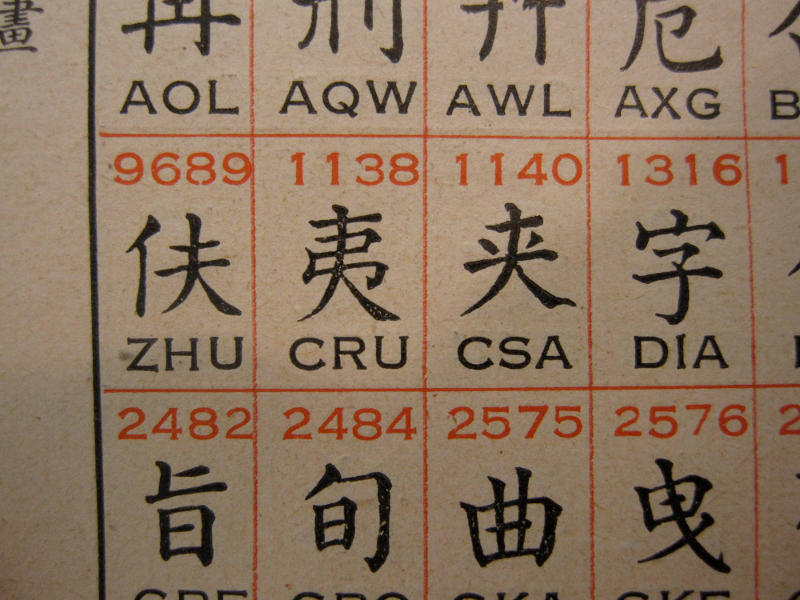
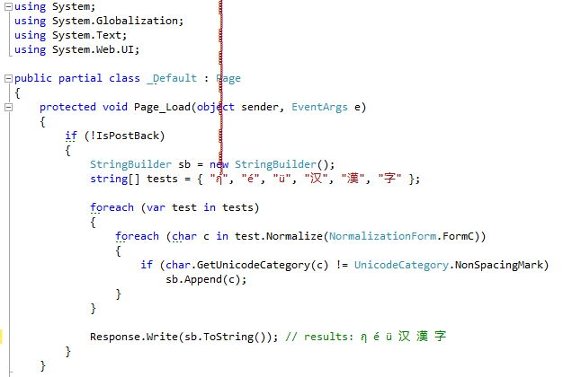

Truncating Unicode
Doug Hoyte
The easiest problem in the world
This talk is about truncating strings.
my $output = substr($unicode_string, 0, $max_length);
What could possibly go wrong with that? This talk is about:
- What could possibly go wrong with that
- Unicode trivia
Oh? You thought this talk would be about something useful? 😄😄😄
Truncating before encoding
The problem with truncating
before encoding is you have no idea how long the encoded string is:
length(encode("UTF-8", $my_string)) == ???
This value depends on how many "high" code-points are in the string, how "high" those code-points are, the normalisation form chosen, and (relatedly) how many combining marks are used.
Truncating after encoding
The problem with truncating
after encoding is it can corrupt text by cutting in inappropriate places:
$ perl -MEncode -Mutf8 -E 'my $enc = encode("UTF-8", "λ");
say substr($enc, 0, 1);'
�
Replacement character
By the way, that funny-looking question mark character that you've seen before is actually its own unicode code point (U+FFFD) called the "replacement character":
Decoders replace invalid bytes with this character.
Hehe look how it makes the symbol monospace
In the beginning there was ASCII...
Well actually, in the beginning there was baudot, a 5-bit character encoding invented in 1870
*. This code was designed to be used by telegraphs and is still in use by radio amateurs.
Baudot was actually based off another 5-bit code invented by Gauss in 1834
† which was in turn based off a 5-bit code invented by Francis Bacon in 1623
‡.
* Not a typo
† Not a typo
‡ Still not a typo
Use somebody else's alphabet
5-bit codes like baudot can only encode 32 symbols... Can the same alphabet encode multiple languages?
- We write English, French, and many other languages with the latin alphabet
- Many languages use Arabic script including Persian, Urdu, and Arabic (the language)
Of course switching a whole writing system is another matter...
- Korean Hangul alphabet was invented in 1443 and even today not 100% adopted
- The Turkmen language changed from Arabic to Latin in 1929, then to the Cyrillic in 1938, then back to Latin in 1991
Necessity is the mother of invention...
| Russian | Живаго |
|---|
| Visual transliteration | }|{uBaro |
|---|
| Phonetic transliteration | Zhivago |
|---|
| Arabic script | تحكي عربي؟ |
|---|
| Arabizi (chat alphabet) | ta7ki 3arabi? |
|---|
| Translation | Do you speak Arabic? |
|---|
Funny looking letters
It has been apparent for some amount of time (at least to non-americans 😉) that people may wish to use non-latin characters. For example, russian-speakers adapted morse code to their alphabet and sometimes it worked out:
| English | Morse Code | Russian |
|---|
| P | · − − · | П |
Sometimes not so much:
| English | Morse Code | Russian |
|---|
| V | · · · − | Ж |
Codebrian Explosion
So there are all these languages, we need mappings from bit representations to their symbols.
- Latin-1 covers "western" european languages like German and French (well, unless your name is LOUŸS)
- Windows-1252 (what people actually mean when they say "Latin-1"): Microsoft took latin-1 and squeezed in some essentials like ™ and Ÿ
- JIS family: Japanese character sets invented by ASCII Corporation (‽). Approximately 1% of all web-pages use these.
- ISCII: Indian Script Code for Information Interchange
Code-pages
- There are actually Latin-2, Latin-3, etc (aka ISO-8859-X)
- See handy unix man-pages: ascii(7), latin1(7), latin2(2), etc
Have you ever catted a binary file to a unix terminal and had your prompt screwed up?
doug@hcsw:~$ echo -e "\x1B(0"
␍┤±@␌┬:·$
This is because of escape codes triggering ISO 2022 code-page switching in your terminal (where multiple character-sets can be tunneled over a 7-bit transport)
Bonus question: How do you fix it?
How to repair your terminal
Answer:
You echo the appropriate ISO 2022 reset sequence of course:
echo -e "\x1Bc"
Or, if for some reason you can't remember that, there is the
/usr/bin/reset command
Fundamental Invention of Unicode
Rather than being yet another mapping from bit patterns to characters, Unicode did the computer-sciency thing and abstracted characters away from their bit pattern encodings.
Although you could argue that the 19th century Chinese telegraph code was the first use of "code-points" in the unicode sense:

16 bits is enough for anybody
In the original unicode design document, Unicode 88, the designers never anticipated needing more than 2 bytes to store a code-point:
Unicode could be roughly described as "wide-body ASCII" that has been stretched to 16 bits to encompass the characters of all the world's living languages. In a properly engineered design, 16 bits per character are more than sufficient for this purpose.
Needless to say, that didn't fly.
Encodings
Any unicode code-point can be represented in various ways:
| UCS-2 | UTF-16 | UTF-8 |
|---|
| % | 00 25 | 00 25 | 25 |
| ɚ | 02 5A | 02 5A | C9 9A |
| ‰ | 20 30 | 20 30 | E2 80 B0 |
| 📀 | — | D8 3D DC C0 | F0 9F 93 80 |
Stateful encoding
An idea for encoding unicode that never really took off is stateful encoding.
Standard Compression Scheme for Unicode: This mode maps the byte values 128–255 to a window of unicode code-points and has special shifter commands to change where this window points.
Binary Ordered Compression for Unicode: This mode encodes the full value of the first unicode code-point, and then records the code-point differences. For example, the string
ABCDCBA becomes the following sequence of code-points:
65 1 1 1 -1 -1 -1
This is similar to image gradient filters: Runs of similar numbers compress well.
Mojibake
When the decoding doesn't match the encoding you get annoyingly screwed up text like:
$ perl -MEncode -E 'use encoding "utf-8"; say encode("utf8", "文字化け")'
æååã
The Japanese (who have suffered much more encoding anguish than we have) have a word for corruption due to encoding:
mojibake.
Also why the heck are things like ☔ (U+2614) in Unicode? You can thank the Japanese for that too: They are in there to round-trip with Japanese character sets.
UTF-16 curse
Not all languages were as forward thinking as perl, and most just hacked in UCS-2 (later UTF-16):
Default python build exposes UTF-16
surrogate pairs:
>>> print sys.maxunicode
65535
>>> print len(u"𝔸")
2
Python built with --enable-unicode=ucs4
>>> print sys.maxunicode
1114111
>>> print len(u"𝔸")
1
Cursed truncation
Because of the UTF-16 curse, Python can cut code-points in half:
>>> print u"𝔸"[0:1]
�
Python 3.3 has taken steps to cure the UTF-16 curse by using UTF-8 internally (kinda), but Java/Windows/Javascript/etc are beyond redemption.
Ewwwwww gross:
$ nodejs -e 'console.log("\ud83d\udca9")'
💩
Much better:
$ perl -CAS -E 'say "\x{1f4a9}"'
💩
UTF-8
UCS-2 can't even represent all of unicode, and UTF-16 has numerous issues. One of which is that it can contain "NUL bytes" and therefore don't play well with C APIs that use NUL bytes as string terminators, for example in file/directory names.
UTF-8 was developed as a solution to this problem. In fact, it was originally called FSS-UTF (File System Safe UCS Transformation Format).
- No NUL bytes
- ASCII compatible
- No "byte order marks" needed
- Self-synchronising
- Invented by Ken Thompson on a napkin in a restaurant
Varicode
You can jump to any byte in UTF-8 encoded text and scan forward to find the next byte that starts with 0 or 11 bits: This is the start of a new character.
In amateur radio there is an encoding called
Varicode which is self-synchronising at the bit-level:
- UTF-8 is variable bytes per character, Varicode is variable bits
- More common characters get shorter codes, just like morse code. Space (U+0020) is 1 bit long: 1. e (U+0065) is 11. ^ (U+005E) is 1010111111
- No code will contain the bit sequence "00" because this is the character separator
Fibonacci codes
How do you generate codes that don't contain a
00 (or
11) bit sequence? With the Fibonacci sequence of course (did you think it was just for recursion homework? 😁)
Suppose we want the code for code-point 17. Pick the largest fibbonaci number less than or equal to 17 and subtract this number. Repeat for the remainder until there is none:
| 1 | 2 | 3 | 5 | 8 | 13 | 21 | |
|---|
| × | 1 | 0 | 1 | 0 | 0 | 1 | | |
|---|
| Σ | 1 | | 3 | | | 13 | | = 17 |
|---|
This sequence is
100101. Fibonacci sequences will never contain the bit-string
11. If you want sequences that can contain
11 but never contain
111 there is the less-commonly known
Tribonacci sequence (see the
N-bonacci family).
Combining Characters
So if we don't do silly things like operate on UTF-16 surrogates, and we understand synchronising boundaries like in UTF-8 then at least we can avoid truncating in the middle of characters right? Not so fast…
Unicode has a concept of "combining" characters (actually combining code-points). They are modifier code-points that change the previous code-point in some way.
For example, the U+0301 code point adds an acute accent:
"ne\x{301}e"' : née
Truncating after the second code-point would drop the accent which is a serious corruption of text in some languages.
Combining Characters: Thai
In English we think of accents as decorative fluff, but they are fundamental to the encoding of some languages such as Thai:
-
"\x{E19}\x{E35}\x{E49}" :
นี้
Nī̂ — "this"
-
"\x{E19}\x{E35}" :
นี
Nī — "nice"
-
\x{E19} :
น
N — "the"
Combining Characters: Misc
Unicode 8 will introduce combining characters to change the skin colours of emoji:
→
Normalisation Forms
To complicate things more, often there are multiple representations for the same character (often because a combined character was present in an encoding Unicode provides round-tripping for).
- In Normalisation Form Composed (NFC), é is represented as the single code-point U+00E9
- In Normalisation Form Composed (NFD), é is represented with the combining character sequence "e" followed by U+301
- Vast majority of unicode in the wild is in NFC
- For some reason, OS X thought it would be a good idea to expose NFD to users of its filesystem.
Combining Grapheme Joiner
By the way, if you want to prevent a combining mark from composing even under NFC, there's a character for that:
use Unicode::Normalize;
say Dumper(NFC("e\x{34f}\x{301}"));
## $VAR1 = "e\x{34f}\x{301}";
- The Combining Grapheme Joiner isn't actually a joiner, more like a separator
- Also prevents the re-ordering of combining marks — don't ask
Extended Grapheme Clusters
So what is a "character" in unicode?
- Byte? No. Unicode works at a higher level than bytes.
- Code-point? No. Code-points can combine together to make single letters.
- The closest thing unicode specifies to a character is called an extended grapheme cluster and is specified by the TR29 Unicode standard "Unicode Text Segmentation"
- It's "extended" as opposed to "legacy" (they had to change the rules)
TR29 EGC Regexp
Here is the regexp to validate a EGC, straight out of the TR29 report:
| Term |
Regex |
Notes |
| combining character sequence |
base? ( Mark | ZWJ | ZWNJ )+ |
A single base character is not a
combining character sequence.
However, a single
combining mark is a (degenerate) combining character sequence. |
| extended combining character
sequence |
extended_base? ( Mark | ZWJ | ZWNJ )+ |
extended_base includes Hangul Syllables |
| legacy grapheme cluster |
( CRLF
| ( RI-sequence
| Hangul-Syllable
| !Control )
Grapheme_Extend*
| . ) |
A single base character is a grapheme
cluster. Degenerate cases include any isolated non-base characters,
and non-base characters like controls. |
| extended grapheme cluster |
( CRLF
| Prepend*
( RI-sequence
| Hangul-Syllable
| !Control )
( Grapheme_Extend
| SpacingMark )*
| . ) |
Extended grapheme clusters add prepending and spacing marks |
How many bytes can a char take up?
- Technically no limit to number of combining characters
- UAX-15 recommends a limit of 30
- Largest "legitimate" use is Tibetan character with 8 combining marks
|

|
Over-long UTF-8
IDN homograph attacks
Inline::C
use Inline C;
print add(4, 9);
__END__
__C__
int add(int x, int y) {
return x + y;
}
Inline::Filters::Ragel
use Inline C, filters => [ [ Ragel => '-G2' ] ];
__END__
__C__
// C + ragel code goes here
Unicode::Truncate
Code walk-through...